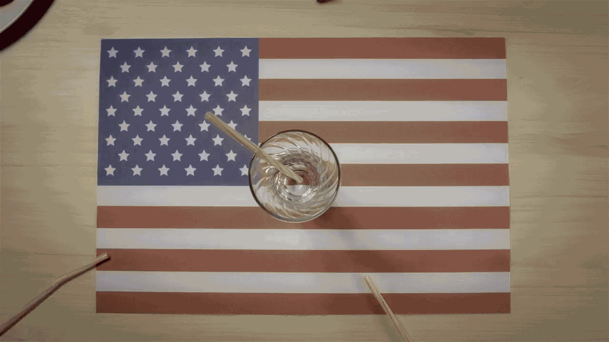

NATURALLE
leite de verdade
Naturalle — Filme de Lançamento
DIREÇÃO DE CRIAÇÃO // COMERCIAL DE TV
Estratégia & Manifesto
Só você tem o direito de adicionar no seu leite o que quiser.
Uma campanha disruptiva para a linha Naturalle. Quando o mercado se acostumou com aditivos e conservantes, nós decidimos voltar à origem: leite 100% puro. A campanha devolve a soberania de escolha para o consumidor de maneira elegante e verdadeira.
100% LEITE, 0% ADITIVOS.
Posicionamento de Categoria

Takes Rápidos — Campanha Digital
CONTEÚDO DINÂMICO // CINEMAGRAPH LOOP
Fim do Case Study
VOLTAR AOS PROJETOS